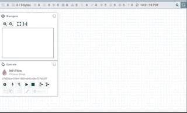

Step-by-Step MarkLogic Processor Guide
Initial Setup for Guide
See the Getting Started page for instructions on setting your environment up for this tutorial.
Review MarkLogic Database State
In order to view the status of the MarkLogic database, we’ll be using the MarkLogic QConsole. You can read more about the tool in the Query Console User Guide.
Go to the MarkLogic QConsole at http://localhost:8000/qconsole and run the following script.
'use strict';
let collection = 'iot-data';
let collectionQuery = cts.collectionQuery(collection);
[
`${collection} count ${cts.estimate(collectionQuery)}`,
'Sample of data',
fn.subsequence(cts.search(collectionQuery), 1, 3)
];
You should see output similar to the following.
["iot-data count 0", "Sample of data", null]
IoT Example Dataset
For this step-by-step guide we’ll be using compressed aggregate JSON data. The data is a mock-up of IoT power data from different devices. The data can be downloaded here.
Go to the NiFi interface at http://localhost:8080/nifi.
Setup MarkLogicDatabaseClientService
In the NiFi UI, click the cog in the lower left of the screen to configure the NiFi flow. In the new modal select the CONTROLLER SERVICES tab. Click the + button on the right and filter for the type DefaultMarkLogicDatabaseClientService and double-click the Controller Service Type in the table results.
Now click on the cog next to our new Controller Service and go to the PROPERTIES tab. Now ensure MarkLogic credentials are added and the other properties are set to their expected values.
Click the APPLY button and then select the lightning bolt next to the Controller Service to enable it.

MarkLogic Put Processor
First, we’ll step through using the PutMarkLogic processor. The following are detailed steps. If you’d like to skip through the detailed setup, you can import the NiFi template and fill in the key following key information:
- Folder location of the
IOT-Data.json.zipin the ListFile configuration - MarkLogic credentials to the DatabaseClient Service associated with the PutMarkLogic Processor
Add ListFile Processor
Drag the Processor icon next the NiFi logo into the template grid. Filter for the ListFile Processor click the ADD button.
With the ListFile Processor on your grid, right-click the processor select Configure from the menu. On the PROPERTIES tab, set the Input Directory property the directory where IOT-Data.json.zip lives. If other files are in the same directory, you’ll also want to set the File Filter to the filename IOT-Data.json.zip to ensure additional files aren’t processed.
Add FetchFile Processor
Add the FetchFile processor to the grid and go to the processors configure screen. On the SETTINGS tab, select the check boxes to automatically terminate the failure, not.found and permission.denied relationships. Apply those changes.
Click and hold the ListFile processor and drag an arrow to the FetchFile processor. A modal will appear with details of the new relationship you are creating. Click the ADD button.
Add UnpackContent Processor
Add the UnpackContent Processor to the grid. Configure the processor so that the failure and original relationships are automatically terminated and set the Packaging Format property to zip.
Add a success relationship from the FetchFile processor to the UnpackContent processor.
Add SplitText Processor
Add the SplitText Processor to the grid. Configure the processor so that the failure and original relationships are automatically terminated and set the Line Split Count property to 1.
Add a success relationship from the UnpackContent processor to the SplitText processor.
Add PutMarkLogic Processor
Add the PutMarkLogic Processor to the grid. Configure the processor so that the failure and success relationships are automatically terminated.
Set the DatabaseClient Service to the Controller Service we created previously in Setup MarkLogicDatabaseClientService.
Set Collections to iot-data, URI Prefix to /, and URI Suffix to .json.
Add a split relationship from the SplitText processor to the PutMarkLogic processor.
For more details on the available properties, see PutMarkLogic Processor.
Run Ingest
Hold the shift key and click and drag to select all the processors on the grid. In the lower left select the Play button to start ingest.
After some time to allow the data to be ingested, go back to QConsole and run the script in Review MarkLogic Database State to see the ingested documents.
MarkLogic Query Processor
This section will cover the QueryMarkLogic processor. The following are detailed steps. If you’d like to skip through the detailed setup, you can import the NiFi template and fill in the key following key information:
DirectoryandOwnerproperties of thePutFileprocessor- MarkLogic credentials to the DatabaseClient Service associated with the
QueryMarkLogicProcessor
Add QueryMarkLogic Processor
Add the QueryMarkLogic Processor to the grid. Configure the processor so that the Query Type property is set to Collection Query, the Query property to iot-data, and set the DatabaseClient Service to the Controller Service we created previously in Setup MarkLogicDatabaseClientService.
Different Query Approaches
There are other Query Type options that can be used. Below are examples of Query property values for each of those Query Type options. See Additional Query Templates for templates with the different approaches.
Combined Query (JSON)
{ "ctsquery": { "collectionQuery": { "uris": ["iot-data"] } } }
Combined Query (XML)
<cts:collection-query xmlns:cts="http://marklogic.com/cts">
<cts:uri>iot-data</cts:uri>
</cts:collection-query>
String Query
Refrigerator
Structured Query (JSON)
{
"query": {
"queries": [{
"collection-query": {
"uri": ["iot-data"]
}
}]
}
}
Structured Query (XML)
<query xmlns="http://marklogic.com/appservices/search">
<collection-query>
<uri>iot-data</uri>
</collection-query>
</query>
For more details on the available properties, see QueryMarkLogic Processor.
Add UpdateAttribute Processor
Add the UpdateAttribute Processor to the grid. This will let us place the document as direct children in the directory we are outputting to. Configure the processor by adding the filename property to ${filename:substringAfterLast('/')}. The property value uses the NiFi Expression Language to trim down filename property of the FlowFile down to just the local name.
Add a success relationship from the QueryMarkLogic processor to the UpdateAttribute processor.
Add PutFile Processor
Add the PutFile Processor to the grid. Configure the processor so that the failure and success relationships are automatically terminated.
Set Directory to the desired output directory, URI Prefix to /, and URI Suffix to .json.
Add a success relationship from the UpdateAttribute processor to the PutFile processor.
Run Export
Hold the shift key and click and drag to select all the processors on the grid. In the lower left select the Play button to start ingest.
After some time to allow the data to be exported, go to the output directory to see the exported documents.